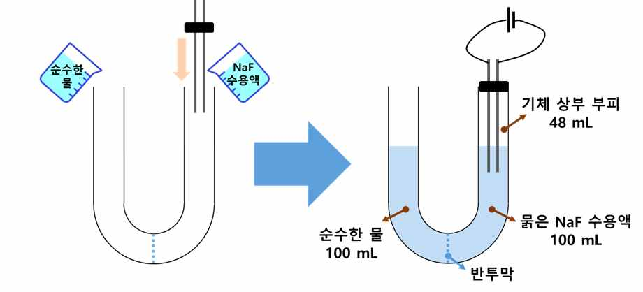

문제 3
1기압에서, 아래와 같이 가운데가 이온을 투과시킬 수 없고 물은 투과시킬 수 있는 반투막으로 분리되어 있는 U자형 유리관이 있다. 이 유리관 왼쪽에는 순수한 물 100 mL를, 오른쪽에는 묽은 NaF 수용액 100 mL를 채웠다. 양쪽을 채운 직후에 오른쪽 유리관을 전극이 연결된 고무마개로 기체가 새어나가지 못하도록 막았으며, 이 때 NaF 수용액 상부에 기체가 차지하고 있는 공간의 부피는 48 mL로 측정되었다(아래의 오른쪽 그림 참조). 모든 실험은 300 K에서 진행되었다. 모든 기체는 이상기체로 가정하며, 기체 상수는 0.08 atm·L·mol\(^{-1}\)·K\(^{-1}\)이다. (4점)

전압 2V로 3,860초 동안 0.1 A의 전류를 흘려 준 이후에 충분한 시간이 흘렀을 때 유리관의 왼쪽과 오른쪽에 채워진 액체의 높이가 정확히 같았다. 전기화학 반응에 따른 수용액의 부피 변화는 무시하며, NaF는 수용액에서 모두 이온화 된다고 가정하고, 처음 유리관의 오른쪽에 넣었던 NaF 수용액의 몰농도는 얼마였을지 구해보시오.
(참고 정보: 패러데이 상수: 96,500 C/mol)